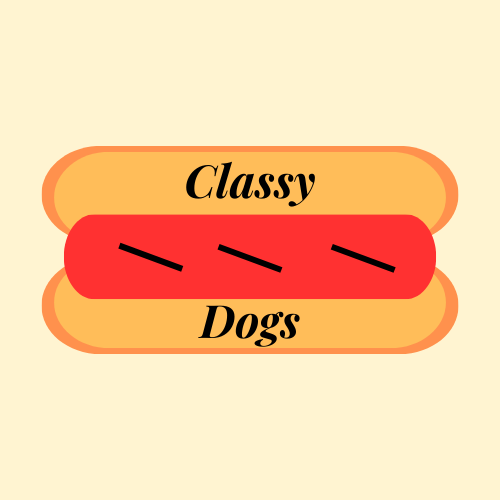
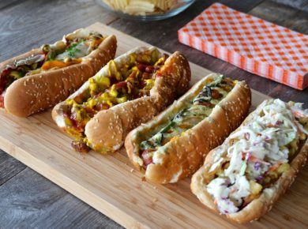
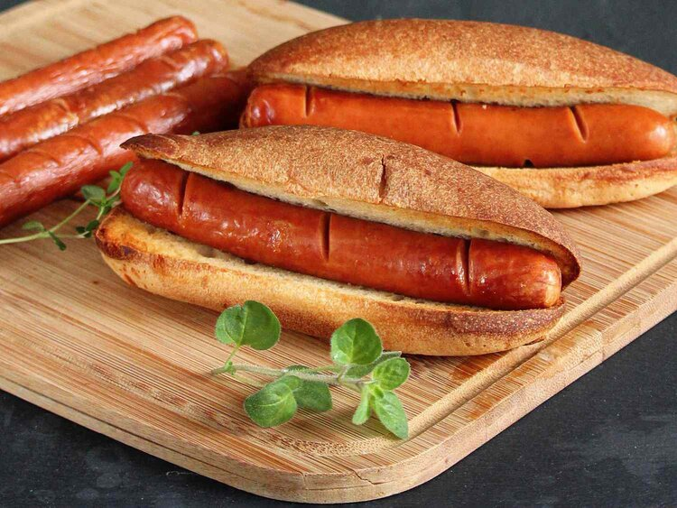
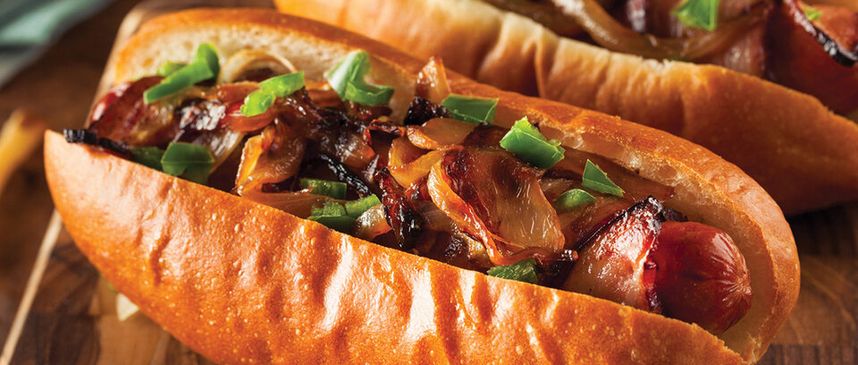
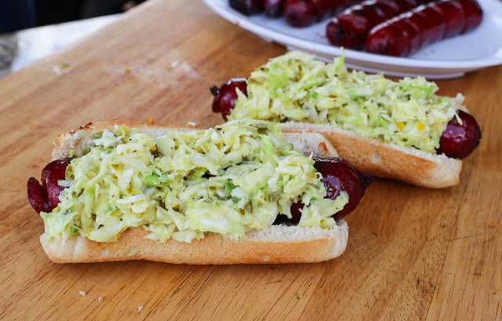
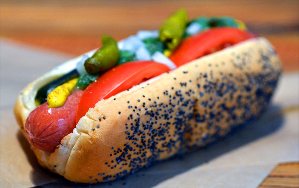
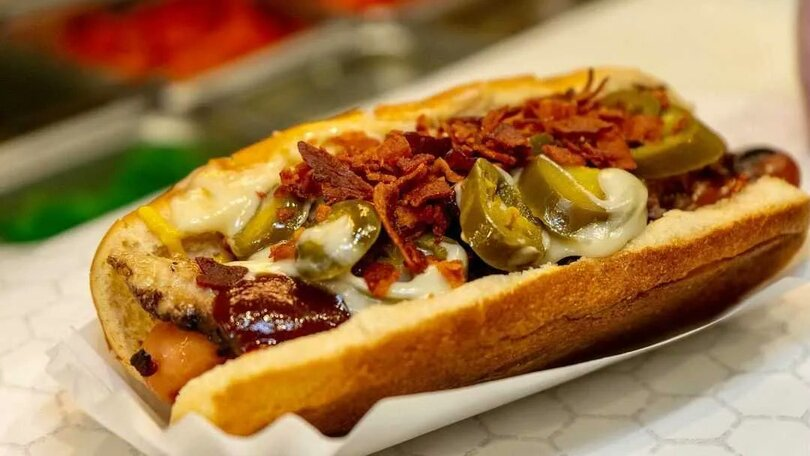
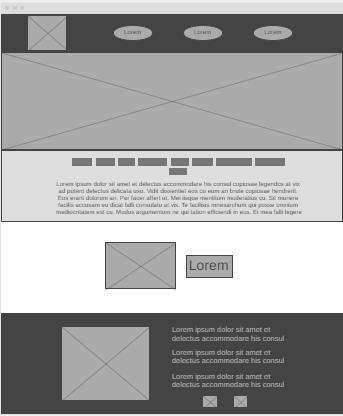
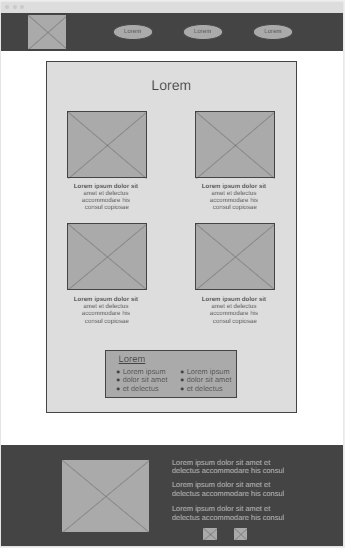
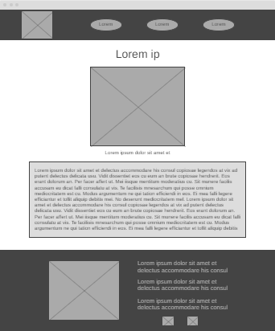

Overview
Purpose
To get people of all ages to buy hot dogs.
Audience
Anyone and everyone. More specifically, families with the professionalism of the website for the adults and older people, and attracting younger people with the exciting food.
Branding
Website Logo
Style Guide
Color Palette
Palette URL: https://coolors.co/fff4d1-E8B85F-567A90-ff3131-ffffff| Primary | Secondary | Accent 1 | Accent 2 |
|---|---|---|---|
| [#fff4d1] | [#E8B85F] | [#567A90] | [#ff3131] |
Typography
Heading Font: Playfair Display
Paragraph Font: Oswald
Normal paragraph example
Inspired by great food and fresh twists to amazing classics, the Classy Dogs takes the everyday hot dog and elevates it to new heights. Come experience some of the most unique flavor combinations ever made using the all-time favorite American food. Each Classy Dog is an innovative masterpiece made with some of the freshest ingredients in the country. Get a taste of the modernized hot dog at the Classy Dogs.
Colored paragraph example
There is a Classy Dog for everyone! From savory, to sweet, to tangy, each Classy Dog tells its own delicious story. Choose from any of our many choices of buns to customize your own favorite Classy Dog. We guarentee there's a Classy Dog for you!
Navigation
Site Map
Content
Home
Inspired by great food and fresh twists to amazing classics, the Classy Dogs takes the everyday hot dog and elevates it to new heights. Come experience some of the most unique flavor combinations ever made using the all-time favorite American food. Each Classy Dog is an innovative masterpiece made with some of the freshest ingredients in the country. Get a taste of the modernized hot dog at Classy Dogs. Location: Downtown Idaho Falls, 503 W. Broadway St. Phone Number: 208-457-6138 Hours: Mon-Sat 11am - 8pm
Images for the Home page
 Menu
There is a Classy Dog for everyone! From savory, to sweet, to tangy, each Classy Dog tells its own delicious story. Choose from any of our many choices of buns to customize your own favorite Classy Dog. We guarantee there's a Classy Dog for you! Bacon Wrapped Hot Dog $5.99, $6.99 with drink Barbeque Coleslaw Hot Dog $6.99, $7.99 with drink Chicago Style Hot Dog $6.99, $7.99 with drink Jalapeño with Bacon Bits Hot Dog $5.99, $6.99 with drink Buns: Kaiser Roll, Pizza Bread, Pretzel Roll, Steamed White Bun, Poppyseed Roll
Images for the Page 2
   About Us
Kyle and Alexis Johnson are from Idaho Falls, Idaho. They met in high school and were close friends throughout those years. They didn’t start dating until college and became married April of 2022. Kyle graduated from Brigham Young University - Idaho with a bachelor’s degree in Computer Science and works as a computer scientist while assisting in running the Classy Dogs with his wife. Alexis also graduated from Brigham Young University – Idaho with a bachelor’s degree in Professional Studies. She is a stay-at-home mom and the co-founder of Classy Dogs. They currently live in Rexburg, Idaho with their first child. Kyle and Alexis both have a deep love for food, and a special appreciation for hot dogs. They originally dreamed of running their own company, something similar to a food truck type of business. Once they both graduated from college, they set their sights on creating their own hot dog company, which has grown from a mobile food truck, to a now established Classy Dogs building in their hometown of Idaho Falls. “We wanted to eventually have a business of our own that we both would love to operate and work together in creating something that we love. Classy Dogs has become exactly that, and more. We love to come up with new improvements to this business and brainstorm ways we can make it become even bigger than it is. It is such a rewarding feeling to have people enjoy something you created and put so much effort into. Thank you to the Classy Dogs’ community and to everyone who has helped us achieve our dreams.” – Kyle and Alexis Johnson
Images for the Page 3

Wireframes
Create three wireframes for your site. One for each page and list them here
Home

Menu

About Us
